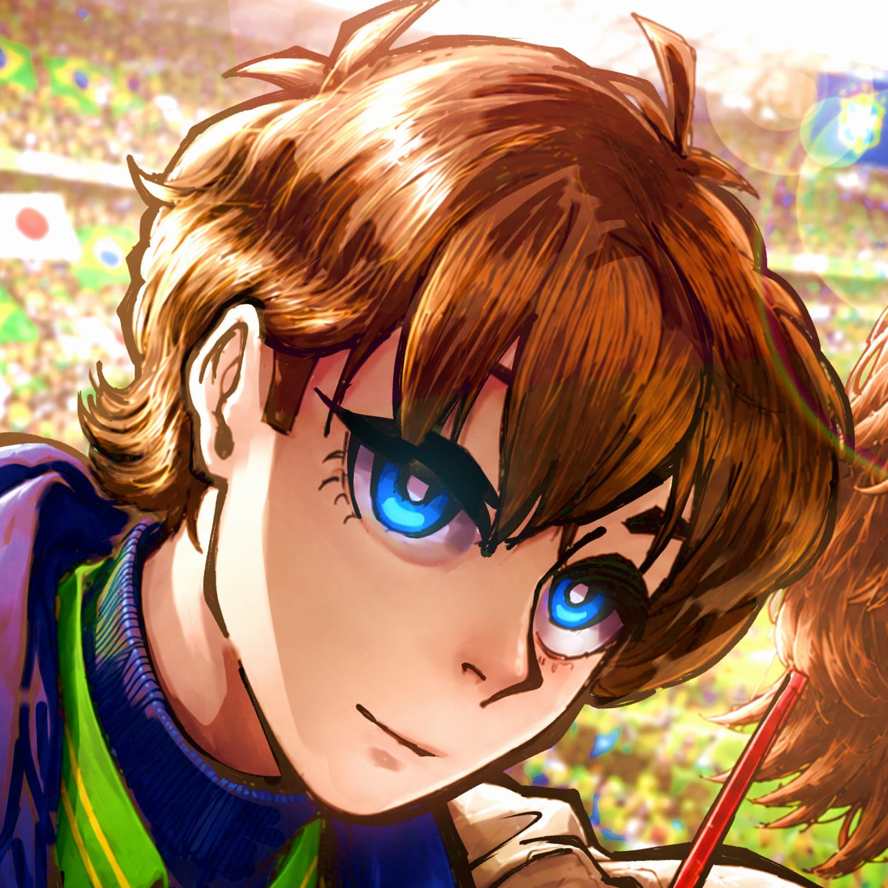

Ottomannia
AUTOR
Responsável pela criação, desenvolvimento e construção da história, além de ser o ilustrador da obra.
@ottomanniaa ↗"Eu estou contente de começar isso. Muito feliz, na verdade. Blue Lock: World Challenge, sem dúvida nenhuma, tem uma proporção interna bem grande, ao menos para mim. Tudo isso é algo que sempre quis fazer, algo que sempre tentei e nunca deu certo, ao menos até agora... Com o apoio de pessoas importantes para mim, e o seu, isso está se tornando possível. Então, obrigada. Espero que aproveitem."